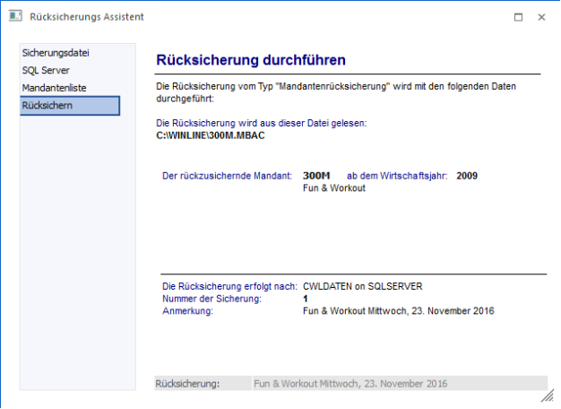
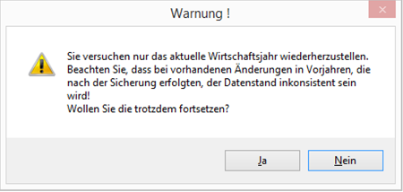
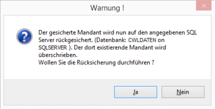
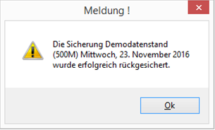

In diesem Fenster werden alle Einstellungen zusammengefasst dargestellt. Damit kann nochmals kontrolliert werden, welche Daten wohin rückgesichert werden sollen.

Durch Anklicken des "Zurück"-Buttons können die Einstellungen nochmals überarbeitet werden. Durch Drücken des Buttons "Ende" oder der ESC-Taste wird der Vorgang abgebrochen und das Fenster geschlossen.
Vor dem Start der Sicherung wird geprüft, welche Jahre sich in der Rücksicherung befinden.
Achtung
Wird eine Rücksicherung des aktuellen Wirtschaftsjahres durchgeführt, obwohl mehrere Jahre für den Mandanten in der Datenbank existieren, kann es zu Dateninkonsistenzen kommen. Bei der Rücksicherung nur des aktuellen Jahres kommt eine entsprechende Warnung.

Durch Drücken des Buttons "Ok" bzw. der F5-Taste wird die Rücksicherung gestartet, wobei die ausgewählten Daten rückgesichert werden. Wurde im Schritt 1 die Option "Bestehende Daten ohne Rückfrage überschreiben" nicht aktiviert, wird eine entsprechende Abfrage bzw. Warnung angezeigt:

Wird die Meldung mit "JA" bestätigt, wird die Rücksicherung gestartet. Wird die Meldung mit "NEIN" bestätigt, wird der Vorgang abgebrochen. Nach Beendigung der Rücksicherung wird die Meldung

angezeigt, wobei in der Meldung auch immer die Beschreibung der Sicherung mit angezeigt wird. Damit ist die Rücksicherung abgeschlossen.
Hinweis
Wenn beim Rücksichern erkannt wird, dass der gesicherte Mandant einen anderen Aufbau der benutzerdefinierten Spalten/Tabellen als das System hat, wird der Benutzer aufgefordert, die Rücksicherung in eine leere Datenbank durchzuführen. Um das Rücksichern in die leere Datenbank erfolgreich durchführen zu können, darf die Option "Mandantenliste aktualisieren" nicht aktualisiert sein.
Hinweis zur Rücksicherung
Bei der Sicherung werden die ausgewählten Wirtschaftsjahre inkl. des aktuellen Wirtschaftsjahres gesichert, wobei beim aktuellen Wirtschaftsjahr auch alle wirtschaftsjahrunabhängigen Tabellen (Offene Posten, Belege, Kostenjournal etc.) mit gesichert werden.
Eine Rücksicherung ist daher nur dann sinnvoll, wenn das höchste gesicherte Wirtschaftsjahr dem aktuellen Wirtschaftsjahr des Mandanten entspricht. Ist das nicht der Fall (z.B. aktuelles WJ = 2005, die Sicherung enthält aber nur Daten inkl. WJ 2004), dann werden die aktuellen wirtschaftsjahrunabhängigen Tabellen von der "älteren" Sicherung überschrieben und alle aktuellen Daten sind verloren.
Bei der Rücksicherung in WinLine ADMIN von .MBAC-Dateien die in einer Version vor 9.0 Build 9002 erzeugt wurden, und wenn in eine Unicode-Datenbank rückgesichert wird (die Datenbank wurde z.B. in WinLine ADMIN in der Version 9.0 Build 9002 erzeugt und ist dabei automatisch Unicode), werden die Daten in Unicodezeichen auf Basis der MS Windows-Einstellung für "Sprache für non-Unicode Programme" umgestellt.
Beispiel
Ein polnischer Mandant (.MBAC) soll von einer Version 9.0 Build 9001 in eine Unicode-Datenbank (z.B. in Build 9002 erzeugt) rückgesichert werden. Für die korrekt "Übersetzung" der polnischen Textzeichen muss die Sprache "Polnisch" in den MS Windows Systemeinstellungen für "Sprache für non-Unicode Programme" hinterlegt werden. Wenn eine Sprache mit einem anderen Codepage-Zeichensatz eingestellt ist, z.B. Deutsch, werden die Sonderzeichen bei der Rücksicherung nicht in polnischen Sonderzeichen konvertiert.